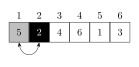
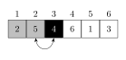
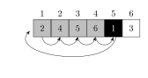

\usetikzlibrary{decorations, calc, arrows, arrows.meta, positioning}
\begin{tikzpicture}[
scale=4,
array/.style={rectangle, draw, inner sep=5pt, text=black, minimum width = 20pt, minimum height = 20pt}
]
% Nodes ---
\node[array] (n11) {38};
\node[array, right=0cm of n11] (n12) {27};
\node[array, right=0cm of n12] (n13) {43};
\node[array, right=0cm of n13] (n14) {3};
\node[array, right=0cm of n14] (n15) {9};
\node[array, right=0cm of n15] (n16) {82};
\node[array, right=0cm of n16] (n17) {10};
\node[array, below left=.5cm of n11] (n21) {38};
\node[array, right=0cm of n21] (n22) {27};
\node[array, right=0cm of n22] (n23) {43};
\node[array, right=0cm of n23] (n24) {3};
\node[array, right=2cm of n24] (n25) {9};
\node[array, right=0cm of n25] (n26) {82};
\node[array, right=0cm of n26] (n27) {10};
\end{tikzpicture}Week 2
In FXB G12 on Mondays, Kresge LL6 on Wednesdays.
Next problem set covers Big-O relationships.
Induction is introduced as useful for proving properties of algorithms.
“Now we do my favorite thing: repetition”
What did we do last Wednesday?
- Hash functions
- A mapping from \(f: S \to \texttt{32 bit numbers}\)
- Want them to be pseudorandom (as erratic as possible)
- They’ll be deterministic functions
- We use it for generating a random number
- Test whether two files are the same
- (Optional) Does the inverse exist?
- In order to apply in checking if the file transferred properly, erraticness is enough. Eratic hashing is also fine for defining a hash map. But cryptographic hashsums are necessary — for passwords, we want security, i.e., an inability to go backwards to the original data (input to hash function).
- Eratic means it satisfies the properties of “a good random number generator”
- Uniformity, independence, Diehard tests, replication, cycle length, speed, memory usage, cryptographically secure…
- A mapping from \(f: S \to \texttt{32 bit numbers}\)
Linear Congruential Generator
AES: Advanced Encryption System
How do we get real random numbers? We need to look for a natural process with randomness.
Hold a Geiger counter against the uranium: Times between the clicks are exponentially distributed. Cosmic background radiation also works.
Concepts of Algorithms
Contents:
- Concepts of algorithms: what is an algorithm? What flavors of algorithms exist?
- Complexity in time and space
- Recursion
- Divide-and-conquer paradigm
- Example: Sorting algorithms
- Example: Traditional and fast multiplication via divide-and-conquer.
Note
What is an algorithm?
A finite list of instructions that is well-defined. We can think of it as a function from input to output space: \(f: S \to T\).
What properties do they have?
- Runtime: They can terminate after finite time, or have finite expected runtime.
- Complexity in time & space.
- Algorithms can be iterative, or recursive.
An instance of is a particular implementation of an algorithm. It should satisfy all the same properties as the original algorithm.
Things to keep in mind:
- Every step must be feasible.
- The algorithm terminates after a finite number of steps.
- Determinisms
Tip
There are two types of randomness: those that go into results, or those that don’t.
Two examples:
- Drawing random numbers; MCMC
- Sorting numbers (random runtime)






Let’s consider the runtime of insertion sort:
In step \(i\), we look at \(n-i\) values to compare.
\[ \sum_{i=1}^{n-1} n-i = \sum_{i=1}^{n-1} i = \frac{n(n-1)}{2} \sim n^2 \]
\[ \sum_{i=1}^n i^2 \sim n^3 \]
In general, is it always one more?
Yes, because we perform \(n\) operations of \(i^{...}\) complexity.
We can use comparison of an integral to a summation
\[ \sum_{i=1}^\infty i^2 \leq \int_{i=1}^{\infty} i^2 \]
Insertion Sort(A)
#| eval: false
for j <- 2 to length[A]
do key <- A[j]
> Insert A[j] into the sorted sequence A[1..j-1].
i <- j-1
while i > 0 and A[i] > key
do A[i+1]
i <- i - 1
A[i+1] <- key
\begin{algorithm} \caption{Insertion-Sort} \begin{algorithmic} \Procedure{InsertionSort}{$A$} \For{$j = p$ \To $r - 1$} \State $y \gets A[j]$ \State $\triangleright$ Insert $A[j]$ into the sorted sequence $A[1..j-1]$ \State $i \gets j-1$ \EndFor \While{$i > 0$ and $A[i] > key$} \State $A[i+1] \gets A[i]$ \State $i \gets i - 1$ \EndWhile \State $A[i + 1] \gets key$ \EndProcedure \end{algorithmic} \end{algorithm}
One way of proving correctness of a sequential algorithm consists in finding an invariant which is always true in each iteration independently of the progress of the algorithm.
Here: What is the invariant statement for insertion sort? The invariant is that in iteration i, in the array A[1..i-1] are sorted.
Growth of Functions and \(\mathcal O\)-notation
We define for functions \(f(n)\) and \(g(n)\):
- Asymptotically tight bound: \[ \begin{align*} \mathcal O(g(n)) & = \{ f(n) : \text{ there exist constants } c_1, c_2 > 0 \\ & \text{ and } n_0 \text{ such that } 0 \leq c_1 g(n) \leq f(n) \leq c_2 g(n) \forall n \geq n_0 \} \end{align*} \]
- Litte-o notation (convergence to zero):
\[\mathcal o(g(n)) = \left\{ f(n) \colon \lim_{n\to\infty} \frac{f(n)}{g(n)} = 0\right\}\]
- “Big-O” notation (asymptotic upper bound): \[ \mathcal O(g(n)) = \left\{ \begin{align*} & f(n) : \text{there exists constants } c > 0 \text{ and } \\ & n_0 \text{ such that } 0 \leq f(n) \leq cg(n) \forall n \geq n_0 \end{align*} \right\} \]
\begin{algorithm} \caption{If-Example} \begin{algorithmic} \Procedure{If-Example}{$x$} \If{$x < 100$} \State $y \gets x$ \Else \For{$i \gets 1$ \To $n$} \If{$A[i] > y$} \State $y \gets A[i]$ \EndIf \EndFor \EndIf \EndProcedure \end{algorithmic} \end{algorithm}
Upper-triangulization (Gaussian elimination) is \(\mathcal O(n^3)\).
For calculating the determinant, we can use either:
- Laplacian expansion: (use minors)
- Which gives us \(\mathcal O(n!) \subset \mathcal O(e^n)\).
- Do Gaussian elimination and then multiply the diagonal: \(\mathcal O(n^3)\). So this is \(\mathcal O(n^3) + \mathcal O(n)\), which is just \(\mathcal O(n^3)\).
Wednesday
P Set principles: Practice \(\mathcal O\) notation, mathematical relations, induction, and a simple algorithm to analyze.
Last time, we did insertion sort.
Recursion
A recursive algorithm is an algorithm which calls itself with ”smaller (or simpler)” input values.
A sequential algorithm example:
\begin{algorithm} \caption{Sequential-Example} \begin{algorithmic} \Procedure{Sequential-Example}{} \State{res $\gets$ 1} \For{$i = 1$ \To $n$} \State res = res $\cdot \; i$ \EndFor \State \textbf{return} res; \EndProcedure \end{algorithmic} \end{algorithm}
\begin{algorithm} \caption{Factorial} \begin{algorithmic} \Procedure{factorial}{n} \If{$n = 1$} \Return 1 \Else \Return {$n \; \cdot \;$ \textsc{factorial} $(n-1)$} \EndIf \EndProcedure \end{algorithmic} \end{algorithm}
An example of a problem not amenable to divide-and-conquer is the traveling salesman problem. If we calculate the optimal route over half the problem, it’s not known how to combine sub-solutions.
https://webgol.dinfo.unifi.it/OptimizationModels/TravelingSalesPerson.html
To use divide-and-conquer we have to be in a situation where we can
- Divide
- Conquer
- Combine
Merge-Sort
The crux is that we can combine two sorted lists in linear time.
Just combining is \(\mathcal O(n)\).
\begin{algorithm} \caption{Merge} \begin{algorithmic} \Procedure{Merge}{$a_1, a_2$} \State $i \gets 1$ \State $j \gets 1$ \State $k \gets 1$ \State $c \gets $ \textsc{Array}($n$) \While{$i,j < n$} \If{$a_{1i} \leq a_{2j}$} \State $c_k \gets a_{1i}$ \State $i \gets i +1$ \Else \State $c_k \gets a_{2j}$ \State $j \gets j + 1$ \EndIf \State $k \gets k + 1$ \EndWhile \Return $c$ \EndProcedure \end{algorithmic} \end{algorithm}
\begin{algorithm} \caption{MergeSort} \begin{algorithmic} \Procedure{MergeSort}{$a$} \State $A_1 \gets$ \textsc{HalfOf}$(A)$ \State $A_2 \gets$ \textsc{TheOtherHalf}$(A)$ \State $S_1 \gets$ \textsc{MergeSort}$(A_1)$ \State $S_2 \gets$ \textsc{MergeSort}$(A_2)$ \Return \textsc{Merge}$(S_1, S_2)$ \EndProcedure \end{algorithmic} \end{algorithm}
1. Divide A into A_1, A_2
2. S_1 = MergeSort(A_1)
S_2 = MergeSort(A_2)
3. S = MergeSort(S_1, S_2)The complexity of \(\texttt{MergeSort}\) on \(n\) variables is \(\mathcal O(2 T(\frac{n}{2}) + n)\) where \(T(n/2)\) is the time complexity of \(\texttt{MergeSort}\) on \(n/2\) variables.
So \(\mathcal O(\texttt{MergeSort}) = 2 [ 2 T(n/4) + n/2] + n\)…
\[ = 2^2 T(n / 2^2) + 2n\]
\[ ... \]
\[ = 2^{\log_2{n}} \cdot T(1) + \log_2(n) n\]
\[ T(n) = n + n \cdot \log_2(n) \in \mathcal O(n \log_2(n))\]
For divide-and-conquer problems, we have time complexity given by
- how many sub-problems we divide into
- size of sub-problems
- effort to marshall the sub-problems (combine)
\[T(n) = a \cdot T(\frac{n}{b}) + n^c.\]
Now we prefer to have \(a\) small, \(b\) big, and \(c\) small.
The Master theorem yields asymptotically tight bounds to recurrences from divide and conquer algorithms that partition an input into smaller subproblems of equal sizes.
The crucial element is thus: what is the (log) ratio of the number of new subproblems to the size of new subproblems. I.e., \(\log_b(a)\), the critical exponent.
Theorem (Master Theorem). Let the runtime of an algorithm be given as
\[T(n) = a T(\frac{b}{n}) + f(n)\]
and let the critical exponent be
\[c_{\text{crit}} = \log_b(a) = \log(\text{n of subproblems})/\log(\text{subproblem size}).\]
Then we have three cases:
If \(f(n) = \mathcal O(n^c)\) for some \(c < c_{\text{crit}}\) then \(T(n) = \Theta(n^{c_{\text{crit}}})\).
If \(f(n) = \Theta(n^{c_{\text{crit}}} \log^k n)\) then \(T(n) = \Theta(n^{c_{\text{crit}}} \log^{k+1} n).\)
If \(f(n) = \Omega(n^c)\) for some \(c > c_{\text{crit}}\) then no definite statement can be made yet. However, if \(a \cdot f(n/b) \leq k \cdot f(n)\) for some \(k < 1\) and large enough \(n\) then \(T(n) = \Theta(f(n)).\)
1 corresponds to work splitting and recombining a problem being dominated by work on subproblems.
2 corresponds to work to split/recombin a problem being comparable to work on subproblems.
3 is whre work to split/recombine a problem dominates subproblems.
The runtime of MergeSort can be expressed as \[T(n) = 2 T\left(\frac{n}{2}\right) + n\]
Therefore \(a = b = 2\) and \(f(n) = n\).
The critical exponent is \(c_{\text{crit}} = \log_b(a) = 1\).
Case 2 applies since \(f(n) = \Omega(n)\) with \(k = 0\).
Therefore the runtime is
\[T(n) = \Omega(n^{c_{\text{crit}}} \log^{k+1}n) = \Theta (n \log n).\]
Warning
Remember that \[n \log_3(n) = \frac{\log_2(n)}{\log_2(3)},\] so it doesn’t matter which base of the \(\log\) we use in \(\mathcal O\) notation.
Multiplication
Instead of writing 3456 * 8957 in our standard long-form multiplication, we can use divide-and-conquer:
\[=(34*89*10^4) + (34*57*10^2) + (56*89*10^2) + 56*57\]
\[T(n) = 4 \cdot T(\frac{n}{2}) + n\]
3456 * 8957
34|56 * 89|57
= (34 * 10^2 + 56) * (89 * 10^2 + 57)
(34 + 56)(89 + 57)
= 34*89 + 34*57 + 56*89 + 56*57
T(n) = 3 T(n/2) + n
c_{\text{crit}} = \log_2(3) = 1.6
O(n^{1.6})At Home
- https://en.wikipedia.org/wiki/Master_theorem_(analysis_of_algorithms)
- https://en.wikipedia.org/wiki/Big_O_notation
- https://en.wikipedia.org/wiki/Multiplication_algorithm#Long_multiplication
- https://web.stanford.edu/class/archive/cs/cs161/cs161.1168/lecture3.pdf
- https://www.geeksforgeeks.org/advanced-master-theorem-for-divide-and-conquer-recurrences/
- https://www.tutorialspoint.com/design_and_analysis_of_algorithms/design_and_analysis_of_algorithms_masters_theorem.htm